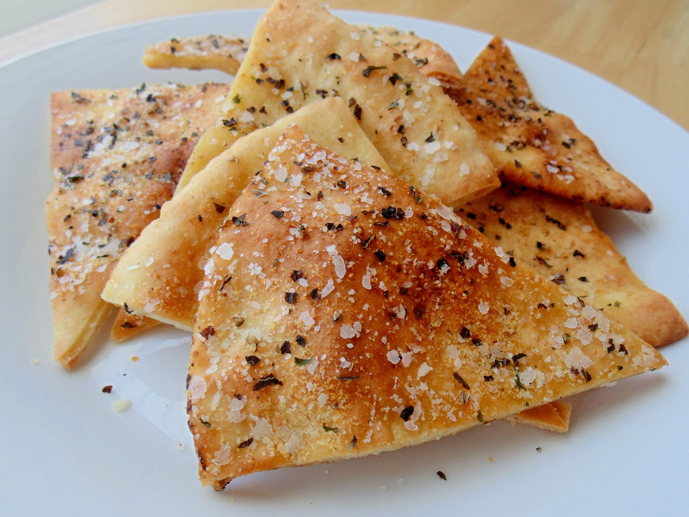

Pita Chips

A lovely accompaniment
These baked pita chips make a lovely accompaniment to any dip or spread.
Ingredients
- 1 Package Spaghetti
- 2 Tablespoons Olive Oil
- 3 Slices Bacon, Diced
- 1 Large Onion finely chopped
- 1 carrot, finely chopped
- 1 teaspoon dried oregano
- 3 cloves garlic, minced
- 1 pound lean ground beef
- 2 Tablespoons balsamic vinegar
- 2 cans crushed tomatos
- 2 teaspoons tomato paste
- 2 teaspoons white sugar
- salt and ground black pepper to taste
- 2 tablespoons chopped fresh basil
- 1/4 cup freshly grated Parmesan cheese
Steps
-
Bring a large pot of lightly salted water to a rolling boil.
Cook the spaghetti in the boiling water until cooked through
yet firm to the bite, about 12 minutes; drain.
-
Heat the olive oil in a large pot over medium heat.
Cook the bacon in the oil until crisp, 8 to 10 minutes.
Stir the onion, celery, carrot, and oregano into the bacon;
continue cooking until the vegetables begin to soften, another 8 to 10 minutes.
Add the garlic and cook until fragrant, about 2 minutes.
Crumble the ground beef into the vegetable mixture;
cook and stir until the beef is completely cooked and no longer pink, 8 to 10 minutes.
-
Pour the balsamic vinegar over the ground beef mixture;
allow to simmer until the liquid evaporates, about 5 minutes.
Stir the crushed tomatoes, tomato paste, and sugar into the ground beef mixture;
bring the mixture to a boil, season with salt and black pepper, and remove from heat.
Stir the fresh basil into the mixture.
-
Ladle the sauce over the cooked spaghetti.
Top with Parmesan cheese to serve.